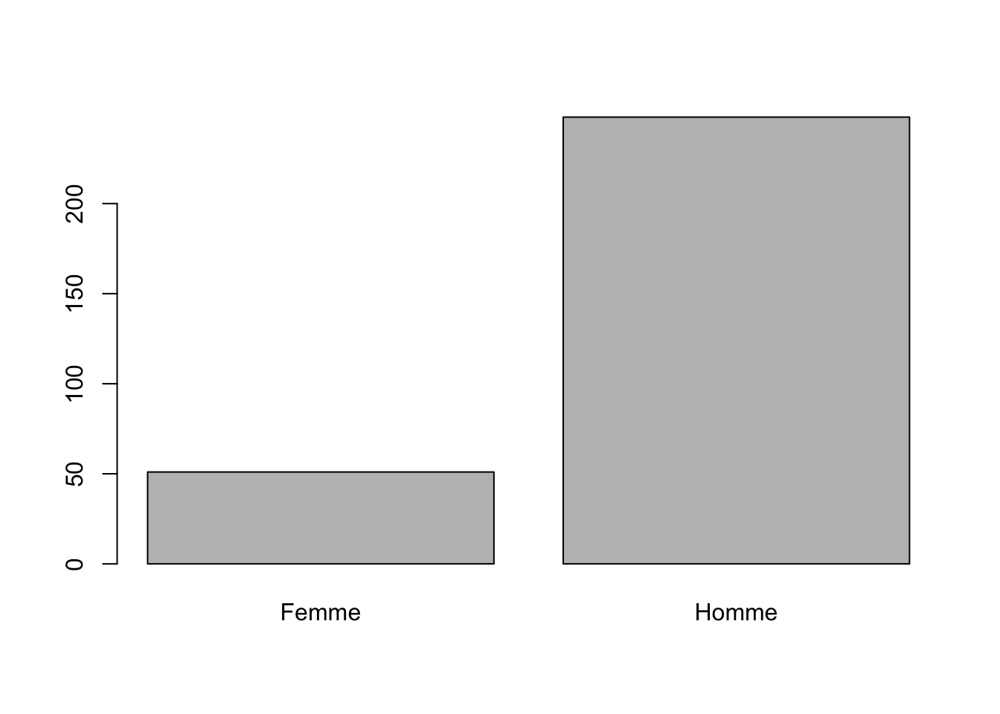

Chapitre 3 UN TABLEAU DE DONNES D’ENQUETE (Les ménages de Yemessoa en 2005)
On suppose que vous avez acquis les premiers réflexes de programmation en R avec les variables quantitatives contenues dans le fichier Europe 1988. VOus y avez appris à expliquer une variable Y quantitative par une variable X pouvant être soit qualitative (analyse de variance, test d’égalité des moyennes), soit quantitative (corrélation, régression)
Dans ce deuxième module, on va essayer d’expliquer une variable qualitative Y par une autre variable qualitative X. On ne traitera pas directement le cas de l’explication d’une variable qualitative Y par une variable quantitative X, car il peut soit se ramener au cas déjà vu dans le cours précédent, soit se résoudre par une transformation de X en une variable X’ qualitative.
L’exemple utilisé ici est fondé sur une véritable enquête de terrain réalisée en 2003 par une étudiante de maitrise de Paris 7, anne-Gaëlle Monnier,à propos de l’électrification d’un village camerounais nommé Yemessoa.
3.1 Définition de l’environnement de travail
3.1.1 charger ou installer les packages utiles.
Comme on l’a déjà vu, il faut charger ici les packages utiles. On installera juste un joli package spécialisé dans l’analyse des tableaux de contingence et leur visualisation.
## Loading required package: gridSi un message d’erreur apparaît, c’est qu’il faut installer le package à partir d’internet. On le fait avec le menu Tools/install Package
3.2 Charger un tableau de données
On utilise ici une procédure adaptée à la lecture de fichiers texte : read.table() L’instruction header=TRUE signale que la première ligne donne le nom des variables L’instruction dec=“,” signale que les décimales sont représentées par des virgules et non pas des points comme dans le premier module. Les séparateurs sont cette fois-ci des tabulations décrites par antislash-t.
3.2.1 Importation d’un tableau
# --------------------------------------------------------
# (2) IMPORTATION ET MISE EN FORME D'UN TABLEAU DE DONNEES
# --------------------------------------------------------
# (2.1) Importation d'un fichier .txt
yem<-read.csv("data/yemessoa/yemessoa2005.txt", header=TRUE, sep="\t",dec=",")On affiche les premières lignes (head) ou les dernières lignes (tail) du tableau pour voir si le chargement s’est bien effectué :
## CODE CON2 CON3 DIST QUAR VIL CLAN SEXE SELF
## 1 237 Oui 2 3 Elig Messobo Yemessoa II Béti Homme (1) Petit
## 2 98 Non 0 20 Nkol Nguégué Yemessoa I Béloua Homme (1) Petit
## 3 157 Non 0 30 Biling Bitom Yemessoa I Béloua Homme (1) Petit
## 4 325 Oui 1 10 Elig Messobo Yemessoa II Béti Homme (2) Moyen
## 5 299 Oui 1 10 Nkol Ambenbe Yemessoa III Béti Homme (3) Grand
## 6 91 Non 0 1000 Nkol Mekongo Yemessoa III Béti Femme (1) Petit
## BUD TABLE SALON AGE ETU5 ETU2
## 1 3950 Non Non 19 ETU3 : CEP-CAP ETU2 : Supérieur au CEP
## 2 3700 Oui Non 20 ETU3 : CEP-CAP ETU2 : Supérieur au CEP
## 3 1250 Non Non 21 ETU5 : BEPC et + ETU2 : Supérieur au CEP
## 4 2200 Oui Non 21 ETU3 : CEP-CAP ETU2 : Supérieur au CEP
## 5 4450 Oui Non 21 ETU3 : CEP-CAP ETU2 : Supérieur au CEP
## 6 1500 Oui Oui 22 ETU2 : Primaire sans CEP ETU1: inférieur au CEP## CODE CON2 CON3 DIST QUAR VIL CLAN SEXE SELF
## 294 128 Oui 2 5 Biling Bitom Yemessoa I Béti Homme (3) Grand
## 295 71 Non 0 35 Nkol Ambenbe Yemessoa III Béti Homme (3) Grand
## 296 176 Oui 2 15 Biling Bitom Yemessoa I Béti Femme (3) Grand
## 297 178 Oui 2 10 Biling Bitom Yemessoa I Béti Homme (3) Grand
## 298 243 Oui 2 25 Mebang Mengoe Yemessoa I Béti Homme (3) Grand
## 299 258 Non 0 1500 Zogo Ntso Yemessoa I Béti Homme (3) Grand
## BUD TABLE SALON AGE ETU5 ETU2
## 294 3200 Oui Non 81 ETU1: Aucun ETU1: inférieur au CEP
## 295 2850 Oui Non 83 ETU2 : Primaire sans CEP ETU1: inférieur au CEP
## 296 2675 Oui Oui 87 ETU1: Aucun ETU1: inférieur au CEP
## 297 3750 Oui Oui 88 ETU2 : Primaire sans CEP ETU1: inférieur au CEP
## 298 8900 Oui Oui 90 ETU2 : Primaire sans CEP ETU1: inférieur au CEP
## 299 1600 Non Non 97 ETU1: Aucun ETU1: inférieur au CEP3.2.2 Vérification du type des variables
On a vu qu’on peut s’éviter beaucoup d’ennuis en contrôlant le type des variables qui a été attribué aux différentes colonnes par R lors de la lecture d’un fichier. Pour cela on commence par regarder quels sont les types de variables du tableau à l’aide de l’instruction str() :
## 'data.frame': 299 obs. of 15 variables:
## $ CODE : int 237 98 157 325 299 91 215 48 50 154 ...
## $ CON2 : Factor w/ 2 levels "Non","Oui": 2 1 1 2 2 1 2 2 2 1 ...
## $ CON3 : int 2 0 0 1 1 0 1 2 2 0 ...
## $ DIST : int 3 20 30 10 10 1000 20 15 30 50 ...
## $ QUAR : Factor w/ 9 levels "Biling Bitom",..: 4 8 1 4 6 7 1 4 4 1 ...
## $ VIL : Factor w/ 3 levels "Yemessoa I","Yemessoa II",..: 2 1 1 2 3 3 1 2 2 1 ...
## $ CLAN : Factor w/ 2 levels "Béloua","Béti": 2 1 1 2 2 2 2 2 2 2 ...
## $ SEXE : Factor w/ 2 levels "Femme","Homme": 2 2 2 2 2 1 2 2 2 2 ...
## $ SELF : Factor w/ 3 levels "(1) Petit","(2) Moyen",..: 1 1 1 2 3 1 2 2 3 1 ...
## $ BUD : int 3950 3700 1250 2200 4450 1500 1150 8550 13575 1750 ...
## $ TABLE: Factor w/ 2 levels "Non","Oui": 1 2 1 2 2 2 2 1 1 1 ...
## $ SALON: Factor w/ 2 levels "Non","Oui": 1 1 1 1 1 2 1 1 1 1 ...
## $ AGE : int 19 20 21 21 21 22 24 25 26 28 ...
## $ ETU5 : Factor w/ 5 levels "ETU1: Aucun",..: 3 3 5 3 3 2 5 2 5 2 ...
## $ ETU2 : Factor w/ 2 levels "ETU1: inférieur au CEP",..: 2 2 2 2 2 1 2 1 2 1 ...Il y a visiblement des erreurs de codage que l’on va corriger. Ainsi, CODE est de type caractère. Mais le type “FACTOR” doit par contreêtre conservé pour toutes les variables qualitatives ayant au moins deux modalités. On peut renommer les modalités d’un facteur
## [1] "0" "1" "2"levels(yem$CON3)<-c("(0) : non connecté","(1) informel","(2) officiel")
yem$DIST<-as.numeric(yem$DIST)
str(yem)## 'data.frame': 299 obs. of 15 variables:
## $ CODE : chr "237" "98" "157" "325" ...
## $ CON2 : Factor w/ 2 levels "Non","Oui": 2 1 1 2 2 1 2 2 2 1 ...
## $ CON3 : Factor w/ 3 levels "(0) : non connecté",..: 3 1 1 2 2 1 2 3 3 1 ...
## $ DIST : num 3 20 30 10 10 1000 20 15 30 50 ...
## $ QUAR : Factor w/ 9 levels "Biling Bitom",..: 4 8 1 4 6 7 1 4 4 1 ...
## $ VIL : Factor w/ 3 levels "Yemessoa I","Yemessoa II",..: 2 1 1 2 3 3 1 2 2 1 ...
## $ CLAN : Factor w/ 2 levels "Béloua","Béti": 2 1 1 2 2 2 2 2 2 2 ...
## $ SEXE : Factor w/ 2 levels "Femme","Homme": 2 2 2 2 2 1 2 2 2 2 ...
## $ SELF : Factor w/ 3 levels "(1) Petit","(2) Moyen",..: 1 1 1 2 3 1 2 2 3 1 ...
## $ BUD : int 3950 3700 1250 2200 4450 1500 1150 8550 13575 1750 ...
## $ TABLE: Factor w/ 2 levels "Non","Oui": 1 2 1 2 2 2 2 1 1 1 ...
## $ SALON: Factor w/ 2 levels "Non","Oui": 1 1 1 1 1 2 1 1 1 1 ...
## $ AGE : int 19 20 21 21 21 22 24 25 26 28 ...
## $ ETU5 : Factor w/ 5 levels "ETU1: Aucun",..: 3 3 5 3 3 2 5 2 5 2 ...
## $ ETU2 : Factor w/ 2 levels "ETU1: inférieur au CEP",..: 2 2 2 2 2 1 2 1 2 1 ...Et voilà : désormais notre tableau est désormais cohérent. On pourra encore l’améliorer par la suite en transformant des variables quantitatives en variables qualitatives
3.2.3 Un petit résumé statistique
La récompense d’une bonne définition du tableau est d’obtenir pour chaque variable un résumé adapté à son type
## CODE CON2 CON3 DIST
## Length:299 Non:165 (0) : non connecté:165 Min. : 1.0
## Class :character Oui:134 (1) informel : 49 1st Qu.: 15.0
## Mode :character (2) officiel : 85 Median : 25.0
## Mean : 370.4
## 3rd Qu.: 500.0
## Max. :3000.0
##
## QUAR VIL CLAN SEXE
## Biling Bitom :61 Yemessoa I :150 Béloua: 32 Femme: 51
## Nkol Ambenbe :60 Yemessoa II : 58 Béti :267 Homme:248
## Elig Messobo :57 Yemessoa III: 91
## Mebang Mengoe:30
## Nkol Nguégué :30
## Zogo Ntso :29
## (Other) :32
## SELF BUD TABLE SALON AGE
## (1) Petit: 54 Min. : 350 Non: 86 Non:191 Min. :19.00
## (2) Moyen: 90 1st Qu.: 2200 Oui:213 Oui:108 1st Qu.:40.00
## (3) Grand:155 Median : 3300 Median :50.00
## Mean : 4937 Mean :51.14
## 3rd Qu.: 5700 3rd Qu.:63.00
## Max. :45000 Max. :97.00
##
## ETU5 ETU2
## ETU1: Aucun : 52 ETU1: inférieur au CEP :164
## ETU2 : Primaire sans CEP:112 ETU2 : Supérieur au CEP:135
## ETU3 : CEP-CAP : 72
## ETU4 : Collège : 34
## ETU5 : BEPC et + : 29
##
## Avant d’aller plus loin, commentez rapidement ce tableau pour bien prendre connaissance de chacune des variables.
3.3 ANALYSE 3 (Y Quali/ X Quali)
Le niveau d’électrification des ménages (Y) est-il lié au genre du chef de ménage (X) ?
Notre objectif est le même que dans le module précédent : chercher s’il existe une relation significative entre X et Y puis en décrire la forme.
3.3.1 Analyse de la variable dépendante (Y)
Deux petites commandes pour dénombrer l’effectif des classes et les représenter
## Non Oui
## 165 134 Commentaire : …
Commentaire : …
3.3.2 Analyse de la variable indépendante (X)
Même programme …
## Femme Homme
## 51 248
Commentaire : …
3.3.4 Calcul du tableau de contingence et des trois tableaux de pourcentage associés
## X
## Y Femme Homme
## Non 36 129
## Oui 15 119## X
## Y Femme Homme
## Non 0.12040134 0.43143813
## Oui 0.05016722 0.39799331## X
## Y Femme Homme
## Non 0.2181818 0.7818182
## Oui 0.1119403 0.8880597## X
## Y Femme Homme
## Non 0.7058824 0.5201613
## Oui 0.2941176 0.4798387Commentaire : …
3.3.5 Calcul du tableau théorique et test du chi-2
## X
## Y Femme Homme
## Non 36 129
## Oui 15 119## X
## Y Femme Homme
## Non 28.14381 136.8562
## Oui 22.85619 111.1438## X
## Y Femme Homme
## Non 1.4808817 -0.6715519
## Oui -1.6432738 0.7451937##
## Pearson's Chi-squared test with Yates' continuity correction
##
## data: tabcont
## X-squared = 5.1726, df = 1, p-value = 0.02295Commentaire : ***
3.4 A VOUS DE JOUER !
Essayez de reproduire la même analyse sur deux autres variables qualitatives